26 candidate Blender frames. Approval authority: Claude. No installation.
Delivery and exact prompts · Frame measurements · Footprint and anchor checks · Browser assertions
Sheets show actual game display size, with a 2×2 footprint outline at each anchor. Game captures use paused debug state for stages and seasons; AB3 terrain and AB5 plants are review context.
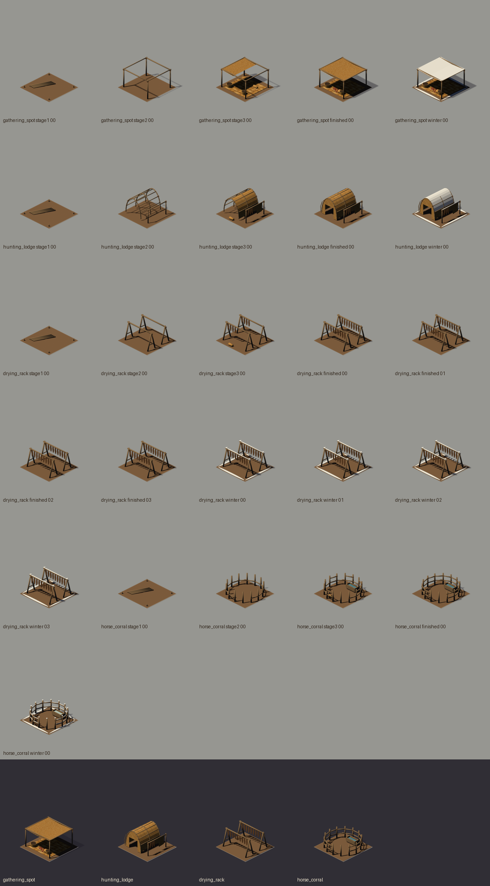
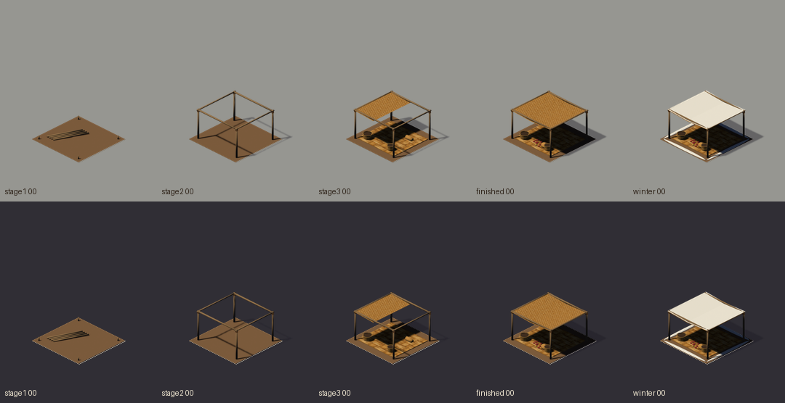
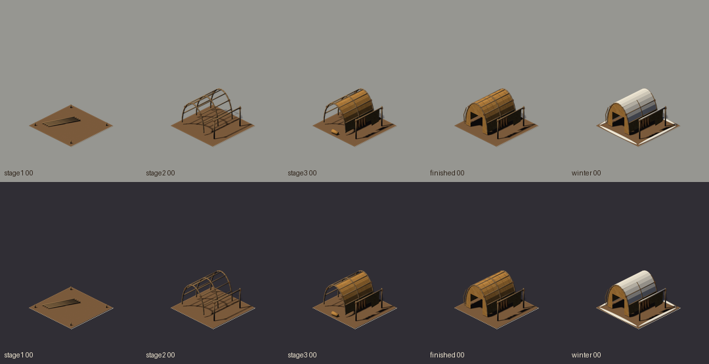
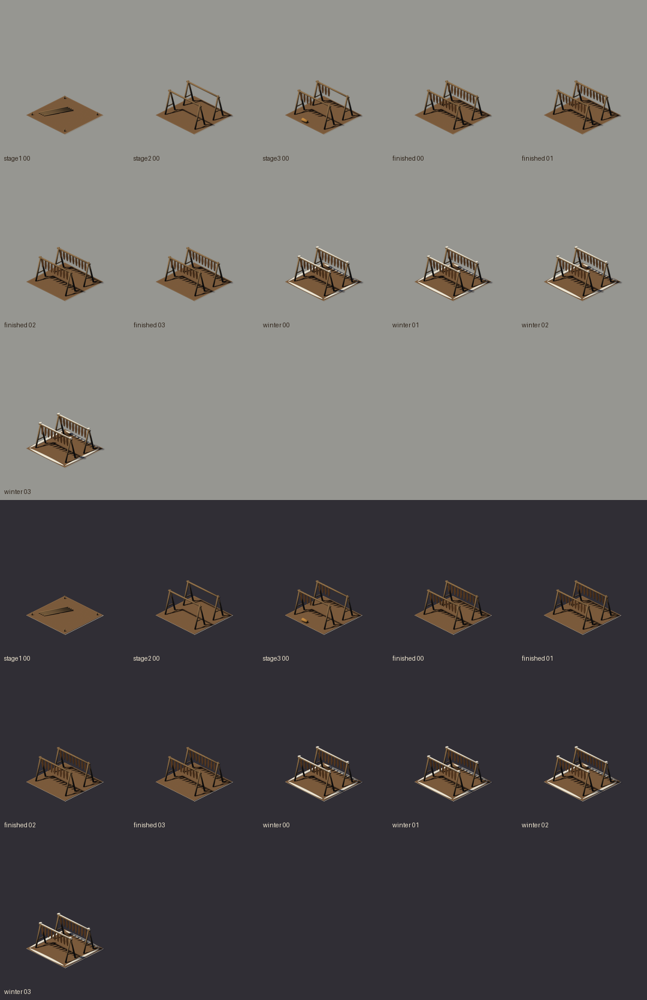
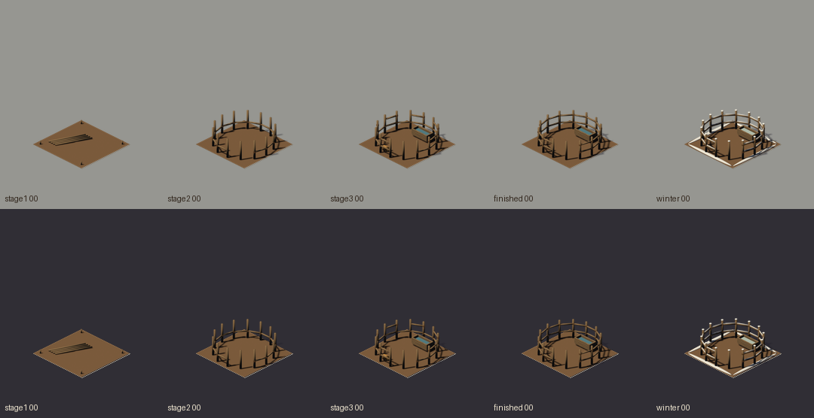
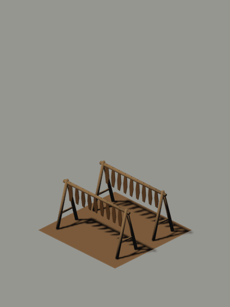
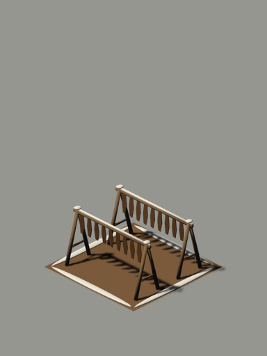
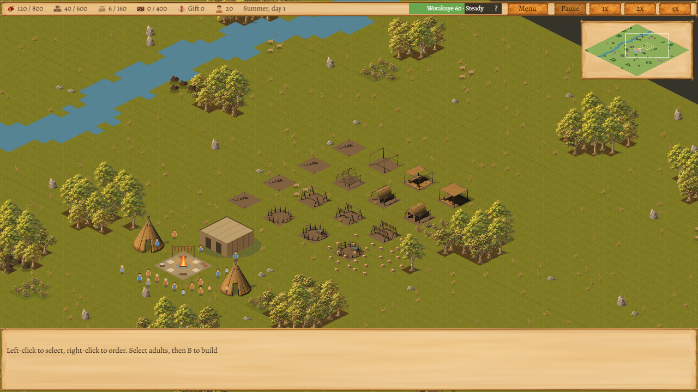
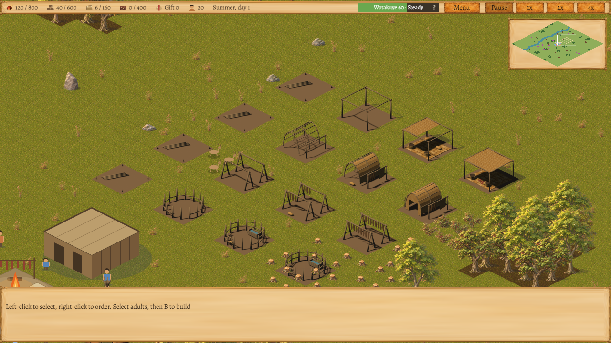
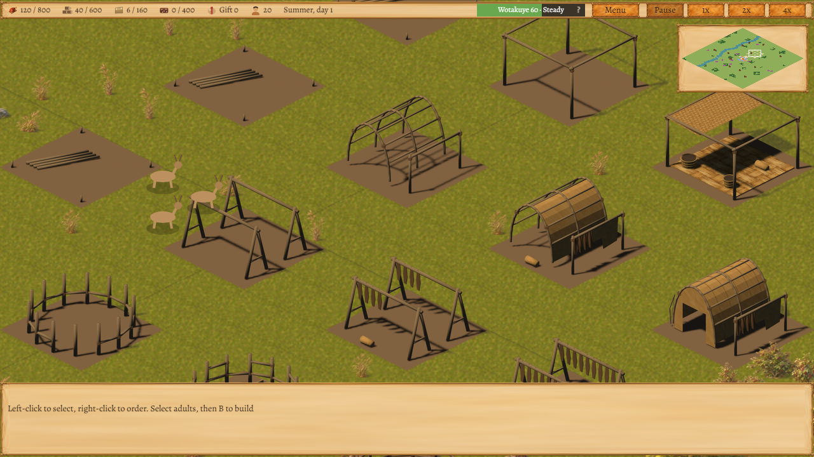
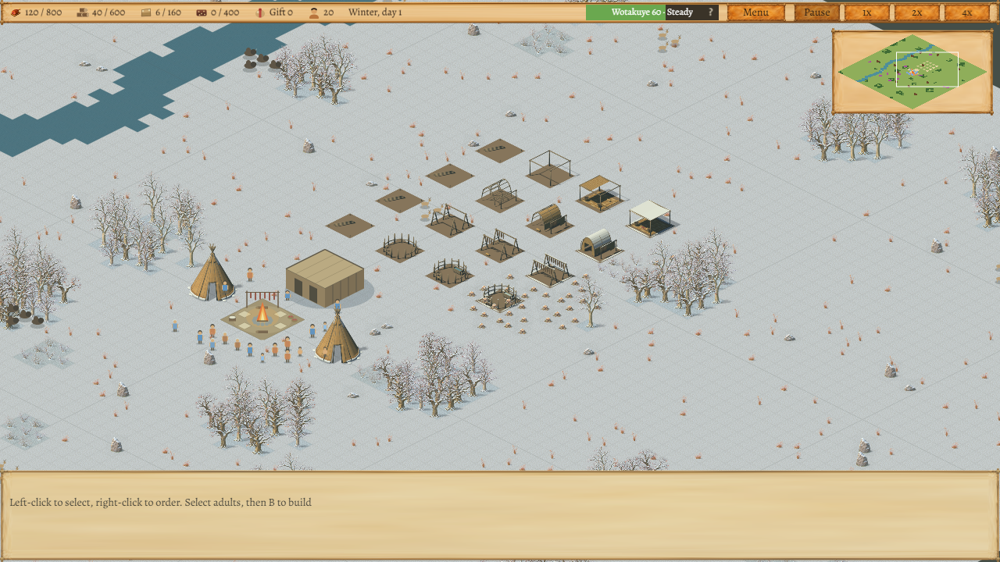
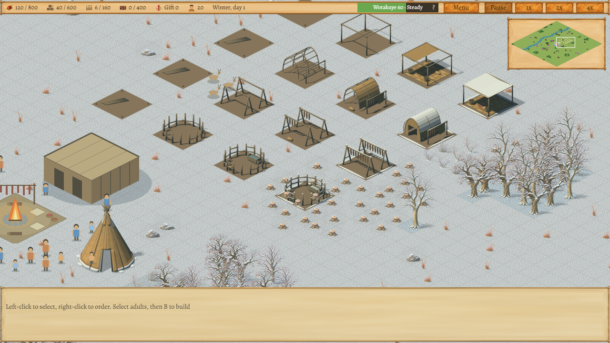
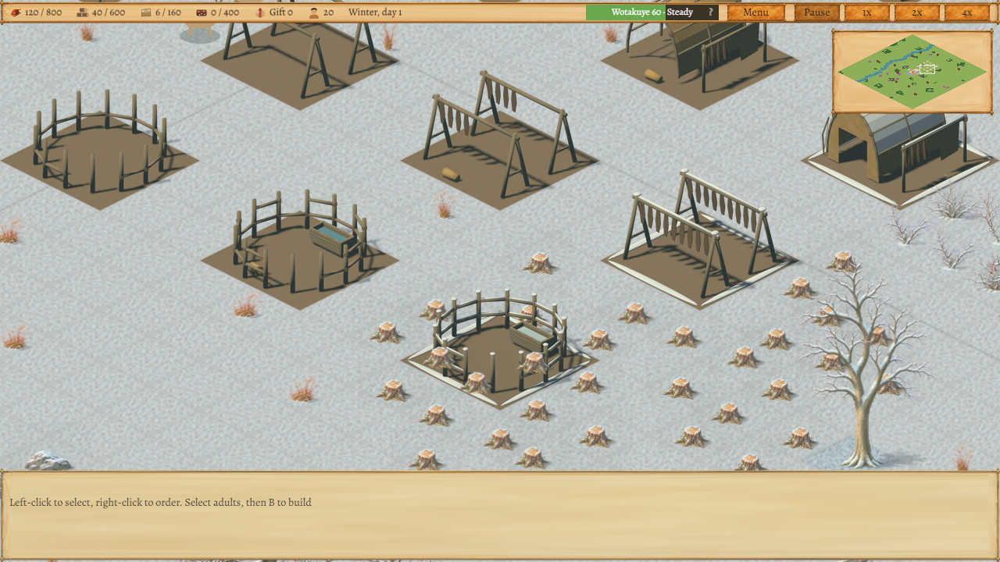